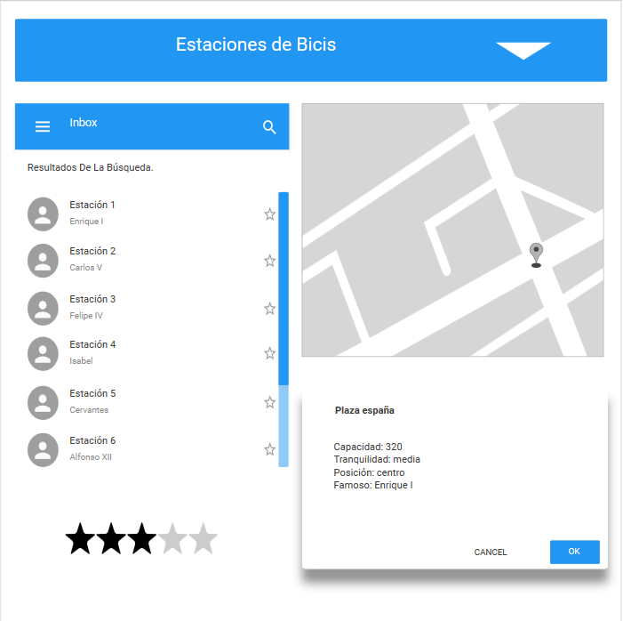

Application Requirements
- La app consiste en un servicio de localización de lugares donde alquilar o aparcar una bicicleta.
- Estos lugares están cerca de calles con nombres de gente famosa o calles en las que vivió o nació algún famoso: escritor, músico, político, etc.
- Usaremos los dos archivos "csv" que tenemos en la carpeta csv en relación con algún portal de datos abiertos como
puede ser DEBEPEDIA.
- El aspecto de la app será como se muestra:
